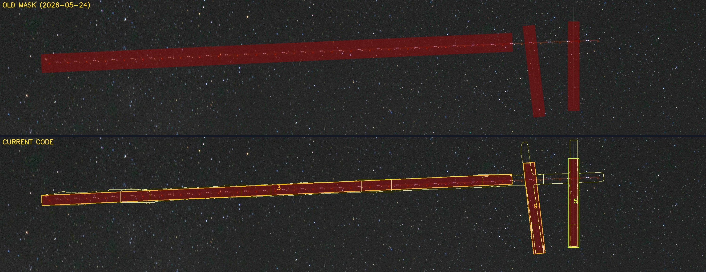
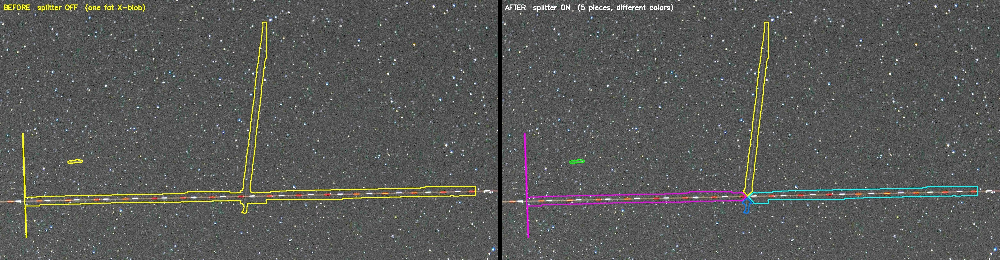

For months Star Trail CleanR kept leaving trails untouched, as if the detector could not see them. It could. It was finding them, and we were throwing the detections away. Here is how we tracked that down, and the other seam problems it turned up.
Star Trail CleanR finds airplane and satellite trails by cutting each photo into small squares and searching one square at a time. That is what lets it catch a hairline trail, and it is also where the trouble started. For months the tool would leave a trail sitting in the finished photo, in plain view, as if the detector had a blind spot. It didn't. Almost every time, the detector had found the trail and we lost it afterward, while stitching the squares back together. This note is the story of tracking those down: a piece our overlap cleanup deleted, a middle the detector never fired on and a second check has to bridge, and two crossing trails that came back as one fat blob. Some were one-time bugs; others still do real work whenever the sky is busy.
The first note in this series, Finding the trails, covers how the detector works: it looks at one photo at a time, and because a trail can be a single pixel wide across the whole frame, it cuts the photo into 640-pixel squares and studies each square on its own. A hairline that would vanish in the shrunk-down whole photo is obvious inside a small square.
Cutting the photo into squares has a cost. A trail rarely lands neatly inside one square. It runs across the line between two of them, so the detector sees it as two separate pieces, one in each square, and those pieces have to be put back into one trail. Normally that just works. Because the squares overlap a little, the two pieces of a trail overlap too, so they touch, and a step called the grouper fuses every touching piece that shares the trail's angle into one shape, one trail no matter how many squares it crossed. That handles almost everything.
The grouper has one strict rule, though: it only joins pieces that actually touch. Leave an empty gap between two pieces, where the trail runs but nothing was detected, and it leaves them apart. Those gaps, and a couple of other slip-ups in the reassembly, are what this note is about. We ran into them on several different star trail sets, and it was always the same: a trail would survive into the finished photo, sitting there in plain view after the tool had run, as if the detector had a blind spot.
It didn't. Nearly every time the tool left a trail in the photo, the detector had already found it. We were losing it afterward, in our own code, while stitching the squares back together. Here are the real ways that happened.
This is the one that took months. On one frame, a trail crossed the line between two squares, and the detector's outline of it came out in two pieces with a clean gap between them, right where the trail itself was plainly solid. Every other tool we had said the trail was there. And it showed in the result: the tool cleaned both ends and left a stub of the trail in the middle, sitting right on the seam.
We assumed the detector had missed the middle of the trail, the part that sat on the square's edge. So we checked. We took the single square that covers that edge and ran the detector on it by itself. The detector found the trail, clearly, with plenty of confidence. It had seen it the whole time.
So what deleted it? Our own overlap cleanup. Because the squares overlap on purpose, the same trail often gets reported twice, once by each square that shares it. If we repaired both, we would repair the same trail on top of itself. So there is a step that spots two reports of the same trail and keeps one, drops the other. The rule that decides "these two are the same trail" measured how much the smaller report sat inside the larger one. On this trail, that measure hit its exact top value: the short piece sat entirely inside the long, seam-crossing piece. And the cleanup, faced with a tie, dropped the long piece and kept the short one. The part of the trail that crossed the seam went out with it.
The fix was a single nudge. We moved the cutoff just past that top value, so a report that sits fully inside another is never dropped. Now every piece survives to the grouper, and the grouper puts the trail back together.
Even with that fix in, it still turned up now and then, and it was maddening every time. The detector would catch an airplane trail on one side of a seam, catch it again on the other side, and miss the plain stretch in the middle. Why the left piece and the right piece, but not the obvious one between them?
These are the pieces the grouper gave up on: there is a real gap between them, and the grouper only joins pieces that touch. But look at where the two pieces stop. Each one ends right on a tile edge, within a few pixels of the grid line. That is what a seam clip looks like: the tile's view ended at that line, so the piece ends there while the trail keeps right on going. A real break would land anywhere; this lands exactly on the grid.
So a second, stricter check takes those leftovers and looks for exactly that. It runs each candidate pair through a short list of tests: do they point the same way, are they the same thickness, do their centers line up, does the gap close along the way the trail is traveling, and the big one, do both pieces stop right on a tile line with the gap straddling it? Only when every answer is yes does it treat the two as one trail and draw a single shape across the gap, filling in the middle that was never detected. If the pieces stop anywhere but a grid line, it leaves them alone: the gap is probably real.
How often it fires depends on the sky. On a calm night it barely comes up; on a busy one it fires all the time. On a single 199-frame Joshua Tree run it bridged fourteen gaps across a dozen frames, each one a trail every other test said was there, broken clean at a seam. It sits behind those five separate gates on purpose, so it never joins two trails that only happen to look alike, and it acts only when the gap sits right on a tile seam.

We still do not know why the detector leaves that gap: why it catches both ends of a trail and misses the plain stretch between them. The gap check works around that. The real fix is a detector that catches the middle too, and that is what we are hoping better models will bring.
One more problem looked the same from the outside. This time the detector found both trails, it just drew them as one. When two trails cross each other, it sometimes wraps both of them in a single fat shape. That should be two thin ones, one per trail. A fat shape repairs badly: it paints over a wide wedge of clean sky between the two trails. So we added a splitter. When a detected shape is too square to be a single trail, the tool looks for the two directions running through it and cuts it into two trail-shaped pieces.

Step back and almost none of these were the detector being blind. It found the trails. The misses lived in how we put its answers back together after cutting the photo apart: a piece our own cleanup deleted, a middle the detector never fired on, two trails drawn as one. From the outside they all looked identical: a trail the tool did not remove. Underneath, each had a different cause.
The lesson we learned is this: when the detector seems to miss something, check the stitching before blaming the detector. Ours could see the whole time. We just kept dropping what it found.